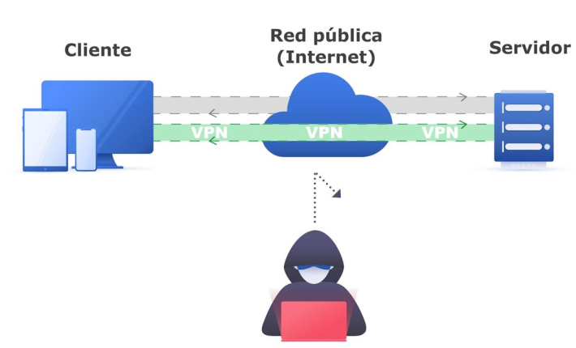
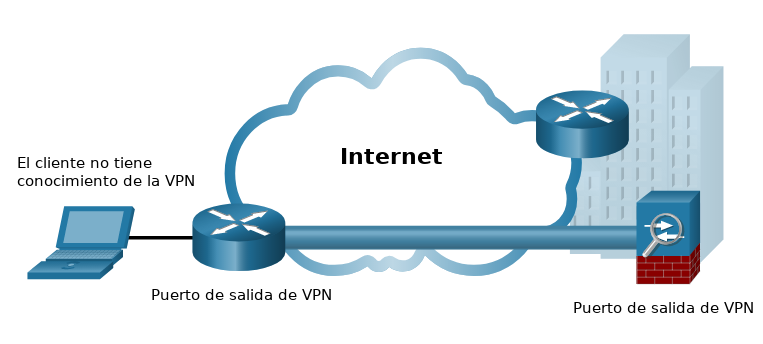
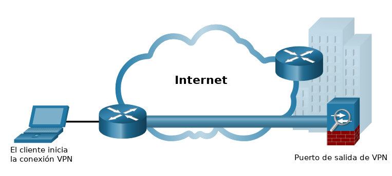
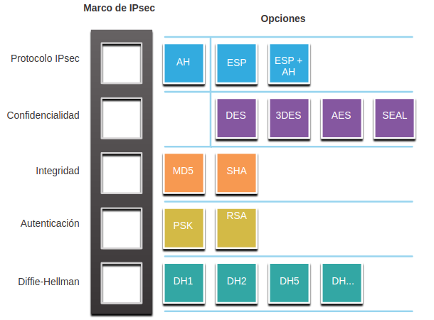
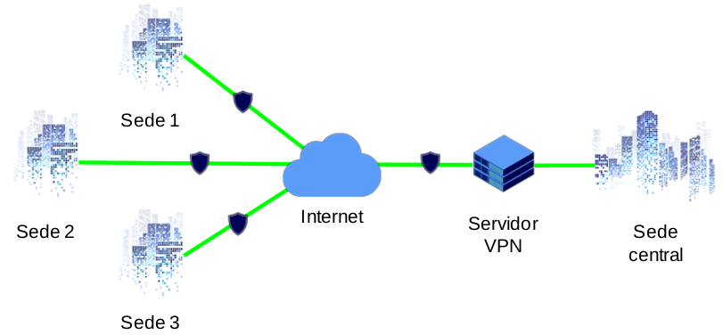
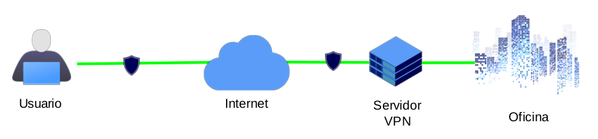
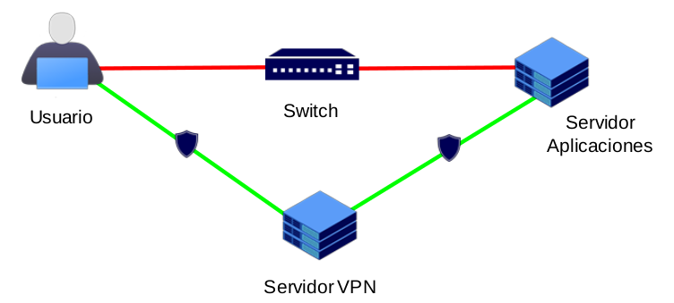
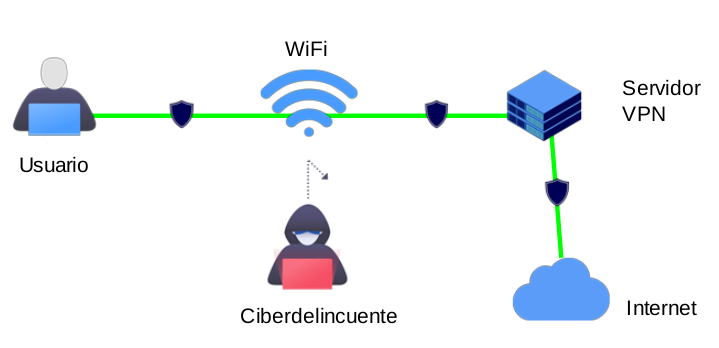

1. Introducción a las Redes privadas virtuales (VPNs)
1. Introducción
Las redes privadas virtuales o VPN permiten extender una red de manera que dispositivos que no se encuentran físicamente en ella, se puedan conectar a esta a través de otras redes, como por ejemplo, a través de Internet. Se pueden usar para distintos fines:
- Permitir que un equipo remoto use los recursos de una red.
- Comunicar dos redes separadas por más de un router como si estuvieran conectadas directamente.
- Saltarse cierto tipo de bloqueos.
- Unir varios ordenadores que están separados unos de otros como si estuvieran trabajando en la misma red.
- Hacer las comunicaciones más seguras y anónimas.
- Ocultar la procedencia de las comunicaciones.
2. Redes privadas virtuales
2.1 Introducción
Para proteger el tráfico de red entre sitios y usuarios, las organizaciones usan redes privadas virtuales (VPN) para crear conexiones de red privada de extremo a extremo. Una VPN es virtual porque transporta la información dentro de una red privada, pero, en realidad, esa información se transporta usando una red pública. Una VPN es privada porque el tráfico se cifra para preservar la confidencialidad de los datos mientras se transporta por la red pública.
La figura muestra una colección de varios tipos de VPN administrados por la oficina principal de una empresa. El túnel permite a los sitios remotos y a los usuarios acceder a los recursos de red del sitio principal de forma segura.

Los primeros tipos de VPN eran estrictamente túneles IP que no incluían autenticación o cifrado de los datos. Por ejemplo, Generic Routing Encapsulation (GRE) es un protocolo de túnel desarrollado por Cisco y que no incluye servicios de cifrado. Se utiliza para encapsular el tráfico IPv4 e IPv6 dentro de un túnel IP para crear un enlace virtual punto a punto.
2.2 Beneficios del VPN
Las VPN modernas actualmente admiten funciones de cifrado, como el Internet Protocol Security (IPsec) y las VPN de Secure Socket Layer (SSL) para proteger el tráfico de red entre sitios.
Los principales beneficios de las VPN se muestran en la tabla.
| Ventaja | Descripción |
| Ahorro de costos | Con la llegada de tecnologías rentables y de gran ancho de banda, las organizaciones pueden usar VPN para reducir sus costos de conectividad mientras incrementa simultáneamente el ancho de banda de la conexión remota. |
| Seguridad | Las VPN proporcionan el mayor nivel de seguridad disponible, mediante el uso de encriptación avanzada y protocolos de autenticación que protegen los datos de acceso no autorizado. |
| Escalabilidad | Las VPN permiten a las organizaciones usar Internet, lo que facilita la adición de nuevos usuarios sin agregar infraestructura significativa. |
| Compatibilidad | Las VPN se pueden implementar en una amplia variedad de opciones de enlace WAN incluidas todas las tecnologías populares de banda ancha. Los trabajadores remotos pueden aprovechar estas conexiones de alta velocidad para obtener acceso seguro a sus redes corporativas. |

2.3 Clasificación de las VPN
2.3.1 VPN de sitio a sitio
Se crea una VPN de sitio a sitio cuando los dispositivos de terminación de VPN, también llamados puertas de enlace VPN, están preconfigurados con información para establecer un túnel seguro. El tráfico VPN solo se cifra entre estos dispositivos. Los usuarios internos no tienen conocimiento de que se está utilizando una VPN.

2.3.2. VPN de acceso remoto
Una VPN de acceso-remoto se crea dinámicamente para establecer una conexión segura entre un cliente y un dispositivo de terminación de VPN. Por ejemplo, se utiliza una VPN SSL de acceso remoto cuando un usuario verifica su información bancaria en línea.

2.3.3 VPN de empresas y proveedores de servicios
Hay muchas opciones disponibles para asegurar el tráfico empresarial. Estas soluciones varían según quién administra la VPN. Las VPN se pueden administrar e implementar como:
- VPNs Empresariales. Las VPN administradas por empresas son una solución común para proteger el tráfico empresarial a través de Internet. Las VPN de sitio a sitio y de acceso remoto son creadas y administradas por la empresa utilizando tanto VPN IPsec como SSL.
- VPNs de Proveedor de Servicios. Las VPN administradas por el proveedor de servicios se crean y administran a través de la red del proveedor. El proveedor utiliza Multiprotocol Label Switching (MPLS) en la capa 2 o la capa 3 para crear canales seguros entre los sitios de una empresa. MPLS es una tecnología de enrutamiento que el proveedor utiliza para crear rutas virtuales entre sitios. Esto efectivamente segrega el tráfico del tráfico de otros clientes. Otras soluciones heredadas incluyen Frame Relay y VPN de Asynchronous Transfer Mode (ATM).
2.4 Protocolos de red seguros
Los protocolos más habituales en la VPN son:
- OPENVPN: Protocolo de código abierto muy popular, sin embargo, no se basa en estándares (RFC). Utiliza un protocolo de seguridad personalizado y SSL / TLS para el intercambio de claves. Proporciona total confidencialidad, autenticación e integridad.
- PPTP: Un protocolo VPN muy básico basado en PPP. El principal problema es que la especificación PPTP no describe las características de cifrado o autenticación y se basa en el protocolo PPP. Es un protocolo inseguro y no se recomienda su uso.
- L2TP: El L2TP-IPSec, utiliza el intercambio de claves de Internet versión 2 IKEv2. Es un protocolo estandarizado en por RFC. IPSec se ha convertido en el protocolo estándar para comunicaciones seguras de Internet, proporcionando confidencialidad, autenticación e integridad.
- Wireguard: Es un protocolo bastante nuevo. Ofrece una conexión VPN extremadamente rápida con muy poca sobrecarga y muy buena seguridad. Tiene el potencial de ofrecer una VPN más simple, más segura, más eficiente y más fácil de usar sobre las tecnologías actuales.
2.5 Protocolos IPSec
IPsec es un estándar IETF (RFC 2401-2412) que define cómo se puede asegurar una VPN a través de redes IP. IPsec protege y autentica los paquetes IP entre el origen y el destino. IPsec puede proteger el tráfico de la Capa 4 a la Capa 7.
Usando el marco de IPsec, IPsec proporciona estas funciones de seguridad esenciales:
- Confidencialidad. IPsec utiliza algoritmos de encriptación para evitar que los delincuentes cibernéticos lean el contenido del paquete.
- Integridad. IPsec utiliza algoritmos de hash para garantizar que los paquetes no se hayan modificado entre el origen y el destino.
- Autenticación de Origen. IPsec utiliza el protocolo Internet Key Exchange (IKE) para autenticar el origen y el destino. Métodos de autenticación que incluyen el uso de llaves previamente compartidas (contraseñas), certificados digitales o certificados RSA.
- Diffie-Hellman. Intercambio seguro de llaves, generalmente varios grupos del algoritmo DH.
IPsec no está sujeto a ninguna regla específica para comunicaciones seguras. Esta flexibilidad del marco permite a IPsec integrar fácilmente nuevas tecnologías de seguridad sin actualizar los estándares existentes de IPsec. Las tecnologías actualmente disponibles están alineadas a su función de seguridad específica. Las ranuras abiertas que se muestran en el marco de IPsec en la figura pueden llenarse con cualquiera de las opciones disponibles para esa función de IPsec para crear una asociación de seguridad (SA) única.

2.6 Casos de uso
- Interconexión entre sedes.
- Acceso a la red de la empresa.
- Acceso recursos dentro de la red.
- Navegación segura en redes wifi.
1. Interconexión entre sedes

2. Acceso a la red de la empresa desde una ubicación externa

3. Acceso recursos dentro de la misma red

4. Navegación segura a través de redes wifi públicas

3. Referencias
Obra publicada con Licencia Creative Commons Reconocimiento No comercial Compartir igual 4.0